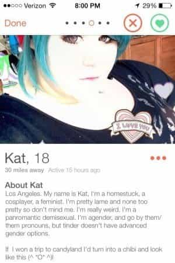
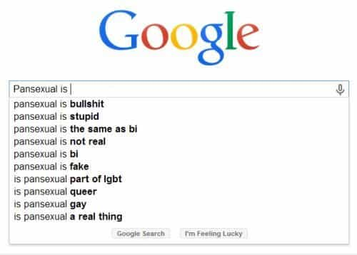
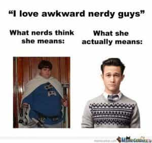
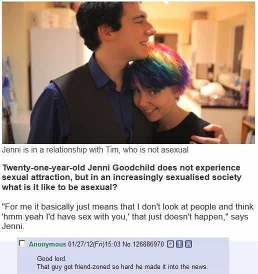

< < < Back
An Idiot’s Guide To New Western Sexual Orientations – Return Of Kings
Up until a couple of years ago, my basic understanding of human sexuality was roughly as follows: there are men, and there are women. A person’s sexual orientation could be defined as one of heterosexual (being sexually attracted to the opposite gender), homosexual (being sexually attracted to others of the same gender) or bisexual (being sexually attracted to both genders).
Recently, however, I’ve been coming across a plethora of new terms in mainstream cultural commentary that purportedly seek to describe other sexual orientations. I quickly found myself coming across such terms as “pan,” “demi,” and even “homoflexible,” wondering what the hell they all mean.
Even the dating app OKCupid has recently broadened the options on gender and sexuality its users can display in their profiles. What was LGBT has now expanded even further, with seemingly new sexual orientations materializing out of thin air on the regular. I’ve written the following “Idiot’s Guide” to help my fellow men avoid the same confusion I’ve suffered in making sense of this new alphabet soup of sexual orientations.
But first, a disclaimer:
You’ll notice that I’ve titled the article as a guide to new “western” sexual orientations. That’s because one would be incredibly hard pressed to find terms like “asexual” or “sapiosexual” being used in any non-western context. In fact, I can’t recall ever even seeing one instance of a woman on a Russian, Ukrainian, Asian or Latin American dating site ever mentioning she identified with one of these new-age, alternate sexual orientations.
Interestingly, the usage of these new sexual orientation terms seems to be primarily restricted to the discourse of two basic areas of the internet:
1. Articles by SJWs and feminists on known manosphere-hating sites (e.g. Jezebel).
2. The social media and dating profiles of young middle and upper-middle class white women.
feminist, panromantic, demisexual, agender and apparent fast-food lover
The definitions and examples I’ll provide below are more relevant to understanding these terms as used in area “b,” but nonetheless will provide clarity in other contexts also. Okay, let’s begin:
1. Pansexual
Definition: sexual attraction to all sexes and gender identities.
Famous Alleged Pansexuals: Madonna, Lady Gaga.
More Accurate Description: Bisexual. Proponents of pansexuality claim that it differs from bisexuality in that it is gender blind, so allegedly pansexuals wouldn’t know a cock from a vagina if it slapped them in the face. The queer “movement,” however, claims both pansexuality and bisexuality can mean attraction to not just the male and female gender, but any gender (whatever those others are). So, they’re essentially the same.

2. Sapiosexual
Definition: hetero, homo, or bisexual attraction based on intelligence.
More Accurate Description: Heterosexual women who, after a few jarring alpha pump-and-dumps, temporarily delude themselves into believing that they will get more tingles from nerdy Betas.

3. Homoflexible and Heteroflexible
Definition: bisexual, but majority of sexual activity with one gender, minority with another.
More Accurate Description: Bisexual without an exactly even 50/50 split of cock and pussy.
4. Demisexual
Definition: sexual attraction to another person contingent upon deep emotional and romantic connection.
More Accurate Description: Women who are approaching the end of easy riding on the cock carousel and desperately want to lock down a good man before the wall or have the “baby rabies.”
With these in mind, a demisexual woman has resolved to restrict future access to her worn-out pussy to only those who want a deep, romantic connection (read: beta-provider LTR) with her. This is, of course, until she meets the next alpha who suits her fancy and is good for a quick one-nighter.
5. Asexual
Definition: is not sexually attracted to anyone; doesn’t have sexual feelings.
More Accurate Description: A woman who has allegedly never experienced sexual feelings yet signed up for a dating site and posted several extremely slutty, suggestive photos under the guise of “trying this out” or “just to make new friends”.
All indications indicate this woman has had multiple previous sexual encounters (including gangbangs), but is using the “asexual” label to discourage messages from thirsty betas who will pass over her profile because “she’s asexual”.

Conclusion
What’s common among each of these supposed new sexual orientations is that we already have a term that has long-described almost exactly the same kind of sexual attraction. This raises an important question: why are people classifying their sexual orientation under new, buzzword banners when there’s already a well-understood term that describes it precisely?
The answer lies in the attention-whoring tendencies of the two groups – a and b – that use these terms the most. To be merely bisexual isn’t counter-mainstream enough anymore and calling oneself that doesn’t get the same kind of attention it once did, when few people identified as this. Therefore, to feed the egos of members of these two groups, new terms for already-existing sexual orientations had to be conjured up to maintain a fresh supply of new attention and coverage.
They’re new labels for the same sort of old sexual behaviour. The next time you see an American woman who is calling herself sapiosexual, heteroflexible, or whatever new term is invented next month to describe long-standing sexual behavior, the most prudent option is to ignore it completely, as a shit test, and game on as you usually would.
These new sexual orientations are, for the most part, nothing more than a cry for attention. They win if we if give it to them.
Read More: Why Rob Rhinehart Is An Idiot


{kind=link}
{kind=link}
{kind=link}
{kind=link}
{kind=link}